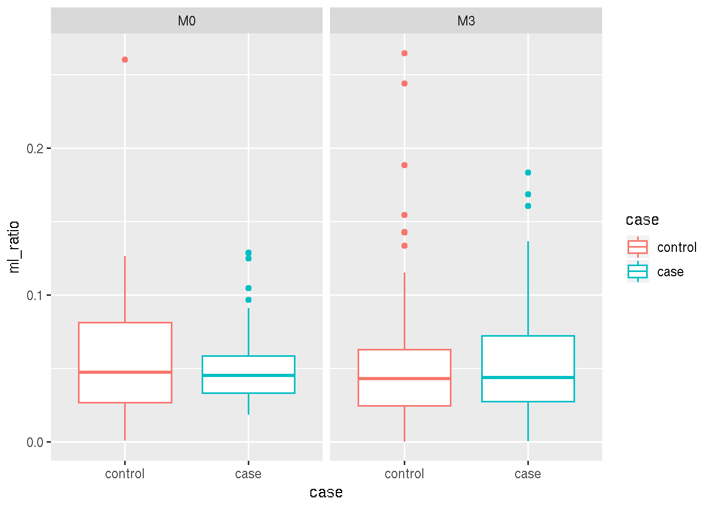

Monocyte Lymphocyte Ratio
Carl Murie and Raphael Gottardo
January 10, 2019
Last updated: 2019-03-20
workflowr checks: (Click a bullet for more information)-
✔ R Markdown file: up-to-date
Great! Since the R Markdown file has been committed to the Git repository, you know the exact version of the code that produced these results.
-
✔ Environment: empty
Great job! The global environment was empty. Objects defined in the global environment can affect the analysis in your R Markdown file in unknown ways. For reproduciblity it’s best to always run the code in an empty environment.
-
✔ Seed:
set.seed(20181108)The command
set.seed(20181108)was run prior to running the code in the R Markdown file. Setting a seed ensures that any results that rely on randomness, e.g. subsampling or permutations, are reproducible. -
✔ Session information: recorded
Great job! Recording the operating system, R version, and package versions is critical for reproducibility.
-
Great! You are using Git for version control. Tracking code development and connecting the code version to the results is critical for reproducibility. The version displayed above was the version of the Git repository at the time these results were generated.✔ Repository version: 55d014c
Note that you need to be careful to ensure that all relevant files for the analysis have been committed to Git prior to generating the results (you can usewflow_publishorwflow_git_commit). workflowr only checks the R Markdown file, but you know if there are other scripts or data files that it depends on. Below is the status of the Git repository when the results were generated:
Note that any generated files, e.g. HTML, png, CSS, etc., are not included in this status report because it is ok for generated content to have uncommitted changes.Ignored files: Ignored: .Rhistory Untracked files: Untracked: analysis/children/ Untracked: code/mal_utilities.R Untracked: cor_table.RDS Untracked: data/170830-RTSS case control phenotyping.txt Untracked: data/BTM_for_GSEA_20131008.gmt Untracked: data/CD4_CSP_PFS.rds Untracked: data/CD4_HBS_PFS.rds Untracked: data/CD8_CSP_PFS.rds Untracked: data/CD8_HBS_PFS.rds Untracked: data/PRIMARY_CD4_MAGNITUDE.rds Untracked: data/faustOutputAllRtss_v02.csv Untracked: data/ics_extra_vars_20180515.csv Untracked: data/m067_seattle_data.RData Untracked: data/phenoLineagePctLive.txt Untracked: docs/figure/ Untracked: output/dmso_M0_both_disease.csv Untracked: output/dmso_M0_old_disease.csv Untracked: output/dmso_M3_both_disease.csv Untracked: output/dmso_M3_old_disease.csv Untracked: output/dmso_M3_young_disease.csv
Expand here to see past versions:
| File | Version | Author | Date | Message |
|---|---|---|---|---|
| Rmd | 55d014c | carlmurie | 2019-03-20 | wflow_publish(files = “analysis/*.Rmd“) |
1 Test monocyte/lymphocyte ratios for disease (case) prediction
The four cell subsets used in this analysis are:
| subsets |
|---|
| Lymphocytes |
| CD14+CD16- Classical Mono |
| CD14loCD16hi Inflammatory Mono |
| CD14+CD16+ Intermediate Mono |
clogit regression will be applied with the following formula:
case ~ ml_ratio + sex + strata(match)
107 samples were removed due to no match variable.
1.1 Sample size
Samples for each cell subset.
| total | F | M | control | case | |
|---|---|---|---|---|---|
| M0 | 97 | 44 | 53 | 60 | 37 |
| M3 | 269 | 128 | 141 | 197 | 72 |
1.2 Classical Monocyte/Lymphocytes
| visit | p-value |
|---|---|
| M3 | 0.7971428 |
| M0 | 0.8660736 |

1.3 Classical+Intermediate+Inflammatory Monocyte/Lymphocytes
| visit | p-value |
|---|---|
| M3 | 0.7699842 |
| M0 | 0.5688874 |

1.4 Session information
R version 3.5.0 (2018-04-23) Platform: x86_64-pc-linux-gnu (64-bit) Running under: Ubuntu 14.04.5 LTS
Matrix products: default BLAS/LAPACK: /app/easybuild/software/OpenBLAS/0.2.18-GCC-5.4.0-2.26-LAPACK-3.6.1/lib/libopenblas_prescottp-r0.2.18.so
locale: [1] LC_CTYPE=en_US.UTF-8 LC_NUMERIC=C
[3] LC_TIME=en_US.UTF-8 LC_COLLATE=en_US.UTF-8
[5] LC_MONETARY=en_US.UTF-8 LC_MESSAGES=en_US.UTF-8
[7] LC_PAPER=en_US.UTF-8 LC_NAME=C
[9] LC_ADDRESS=C LC_TELEPHONE=C
[11] LC_MEASUREMENT=en_US.UTF-8 LC_IDENTIFICATION=C
attached base packages: [1] stats4 parallel stats graphics grDevices utils datasets [8] methods base
other attached packages: [1] mal067data_1.0 kableExtra_1.0.1 MAL067Package_1.0
[4] GSEABase_1.42.0 graph_1.58.0 annotate_1.58.0
[7] XML_3.98-1.11 AnnotationDbi_1.42.1 IRanges_2.14.6
[10] S4Vectors_0.18.1 survival_2.42-3 data.table_1.12.0
[13] here_0.1 magrittr_1.5 forcats_0.3.0
[16] stringr_1.4.0 dplyr_0.7.99.9000 purrr_0.2.5
[19] readr_1.3.1 tidyr_0.8.0 tibble_2.0.1
[22] ggplot2_3.1.0 tidyverse_1.2.1 limma_3.36.1
[25] Biobase_2.42.0 BiocGenerics_0.28.0 RNASeqUtilities_1.1 [28] knitr_1.21
loaded via a namespace (and not attached): [1] nlme_3.1-137 bitops_1.0-6 lubridate_1.7.4
[4] bit64_0.9-7 webshot_0.5.1 httr_1.4.0
[7] rprojroot_1.3-2 tools_3.5.0 backports_1.1.2
[10] R6_2.4.0 DT_0.5 DBI_1.0.0
[13] lazyeval_0.2.1 colorspace_1.4-0 withr_2.1.2
[16] tidyselect_0.2.5 gridExtra_2.3 bit_1.1-14
[19] compiler_3.5.0 git2r_0.24.0 cli_1.0.1
[22] rvest_0.3.2 xml2_1.2.0 labeling_0.3
[25] scales_1.0.0 digest_0.6.18 rmarkdown_1.11
[28] R.utils_2.7.0 pkgconfig_2.0.2 htmltools_0.3.6
[31] htmlwidgets_1.3 rlang_0.3.1 readxl_1.1.0
[34] rstudioapi_0.9.0 RSQLite_2.1.1 generics_0.0.2
[37] jsonlite_1.6 R.oo_1.22.0 RCurl_1.95-4.10
[40] Matrix_1.2-14 Rcpp_1.0.0 munsell_0.5.0
[43] R.methodsS3_1.7.1 stringi_1.3.1 whisker_0.3-2
[46] yaml_2.2.0 plyr_1.8.4 grid_3.5.0
[49] blob_1.1.1 crayon_1.3.4 lattice_0.20-35
[52] haven_2.0.0 splines_3.5.0 hms_0.4.2
[55] pillar_1.3.1 glue_1.3.0 evaluate_0.13
[58] modelr_0.1.1 cellranger_1.1.0 gtable_0.2.0
[61] assertthat_0.2.0 xfun_0.5 xtable_1.8-3
[64] broom_0.5.1 viridisLite_0.3.0 memoise_1.1.0
[67] workflowr_1.1.1
This reproducible R Markdown analysis was created with workflowr 1.1.1